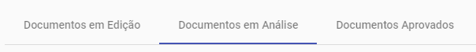
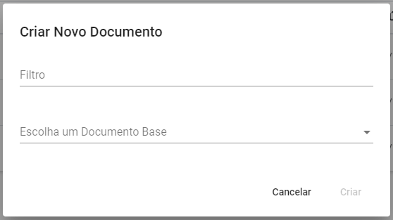
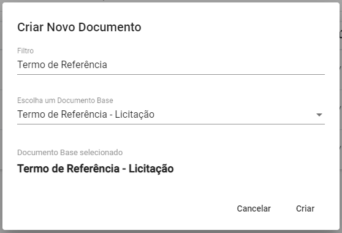
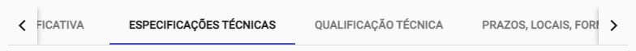
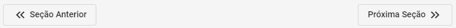
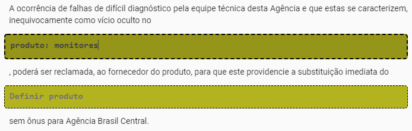
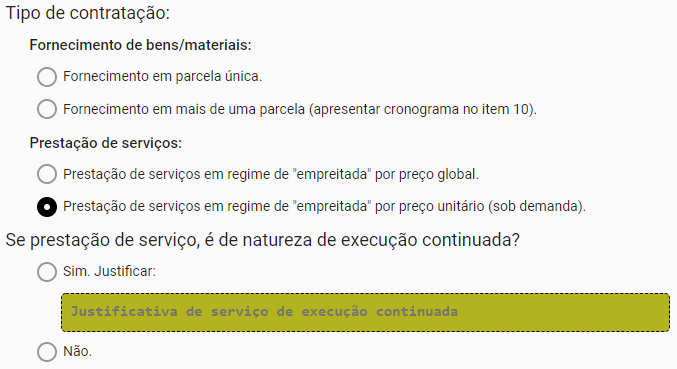
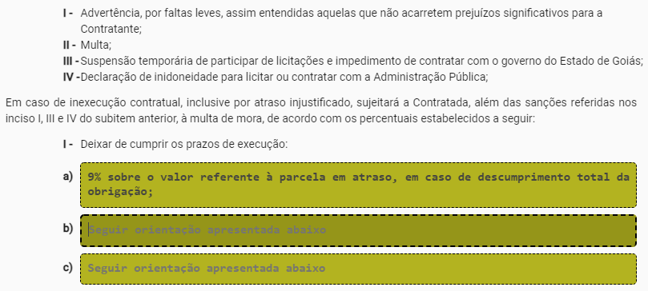

Sistema de Licitação - Documentação subsistema Documentos
Página de Documentos
Na Página de Documentos é possível
acessar todos todos os Documentos criados por um usuário, além de criar
novos Documentos
Os Documentos criados por um usuário
ficam divididos em três categorias:
Documentos em Edição,
Documentos em Análise e
Documentos Aprovados, e podem ser
acessados através de abas de mesmo nome.

Em cada uma dessas categorias é apresentado, para cada
Documento, sua
Identificação, seu
Código, seu
Status, sua
Criação, e sua
Última Edição. Além disso, cada Documento possui um
conjunto de Ações de acordo com sua
categoria.
Para Documentos na categoria
Documentos em Edição estão disponíveis as
Ações:
editEditar Documento - redireciona o
usuário para a Página de Preenchimento de Documento, permitindo que o
usuário preencha o Documento.
plagiarismVisualizar Documento - redireciona
o usuário para a Página de Visualização de Documentos, permitindo a
visualização do Documento.
taskEnviar Documento para análise -
envia o Documento para análise,
onde ele será avaliado quanto sua corretude e completude.
deleteExcluir Documento - exclui o
Documento. Como esta operação não
pode ser desfeita, um pop-up pede que a ação de exclusão seja
confirmada.
Para Documentos na categoria
Documentos em Análise estão disponíveis as
Ações:
plagiarismVisualizar Documento - redireciona
o usuário para a Página de Visualização de Documentos, permitindo a
visualização do Documento.
restore_pageReabilitar edição do Documento -
envia o Documento para edição,
permitindo que sejam feitas novas alterações nele.
E para Documentos na categoria
Documentos Aprovados estão disponíveis as
Ações:
plagiarismVisualizar Documento - redireciona
o usuário para a Página de Visualização de Documentos, permitindo a
visualização do Documento.
file_downloadExportar Documento - faz o
download de um arquivo de texto (.txt) com o conteúdo do
Documento já pronto para ser
inserido no SEI.
A Identificação de um
Documento também é um link para a sua
Página de Visualização. Dessa forma, é possível acessar a página de
visualização de um Documento ao clicar
na sua Identificação.
Criando Documentos
Para criar um Novo Documento clique no
botão Criar Novo Documento.
Após clicar no botão Criar Novo Documento,
irá aparecer um pop-up pedindo que seja selecionado um
Documento Base que, como o próprio nome
diz, irá servir de base para o
Documento que será criado.

Com um Documento Base selecionado,
clique no botão Criar para criar o
Documento. Depois disso, você será
redirecionado para uma nova página onde será possível preencher o
Documento criado. A operação de criar
um novo Documento pode ser cancelada a
qualquer momento usando o botão Cancelar.

Preenchendo Documentos
Um Documento é composto de diversas
Seções e cada
Seção é formado por vários
Itens. Na
Página de Preenchimento de Documento é
possível navegar por todas essas seções usando as abas que ficam próximas
ao topo da página e que têm os nomes dessas seções,

ou usando os botões Seção Anterior e
Próxima Seção que ficam próximos ao fim da
página.

Existem quatro tipos de Itens:
Texto, Opções,
Lista e Nota.
O Item Nota é usado para guardar trechos de
texto fixo, que é o mesmo para todas as
licitações; e é usado para a inserção de
texto variável, que muda de licitação para
licitação. Para preencher o texto variável, basta clicar na caixa de
texto, que tem uma cor destacada, e
digitar o texto desejado.

O Item Opções é usado para preencher trechos
de documentos de licitação em que alguma opção deve ser escolhida. Por
exemplo, se o produto a ser contratado é um
serviço ou um
bem/material. Quem estiver preenchendo o
Documento deve escolher a opção
apropriada e marcá-la. A escolha de uma opção em particular pode, em
alguns casos, exigir que um texto adicional seja inserido, por exemplo uma
justificativa da escolha daquela opção. Nesses casos, uma caixa de texto
de cor destacada, como aquela usada no
Item Texto, sevirá para que esse conteúdo
adicional seja inserido.

O Item Lista tem basicamente a mesma função
do Item Texto, com a diferença que este item
dispõe seus textos fixos e
entradas de texto na forma de uma lista,
enumerados com letras romanas maiúsculas ou letras latinas minúsculas.

Por último, o Item Nota tem o papel de
orientar no preenchimento do Documento.
Dessa maneira, o Item Nota aparece na
Página de Visualização de Documento ou
no arquivo de texto (.txt) exportado para o SEI. As orientaçãoes contidas
neste item podem ter um caráter geral ou podem especificar de forma detalhada
como os outros itens devem ser preenchidos.